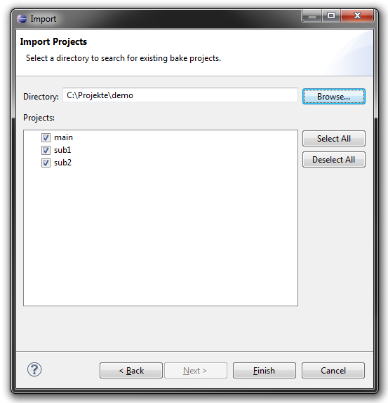
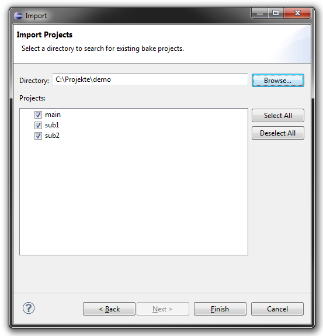

How to create a workspace in Eclipse
General note
Using bake in Eclipse is very similar compared to the CDT build mechanism.
One major difference is, that .cproject and .project files are just wrappers. Do not use the standard property pages, they will be simply ignored! Edit only the Project.meta files.
The .cproject and .project files shall not be committed to your source control.
However, you may commit .cproject and .project files with an empty dummy configuration once to avoid the following importing step for future checkouts.
Import
If you have a workspace with no .cproject and .project files, but Project.meta files, you can import them to Eclipse.
You can also use the importer to import single projects.
The importer can be found unter File->Import or in the context menu of the Project Explorer.
All (sub)directories with a Project.meta are listed here. Choose the projects to import and press Finish.
 
